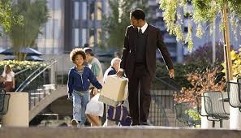
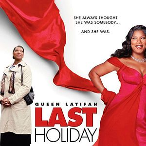
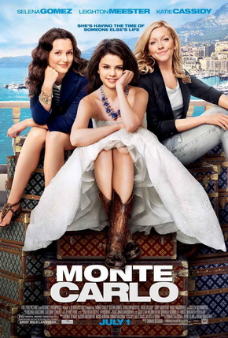
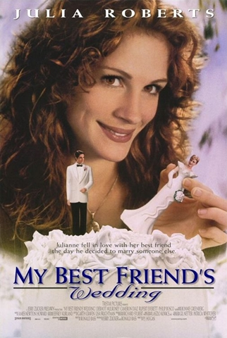
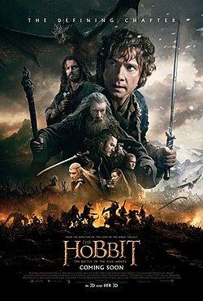
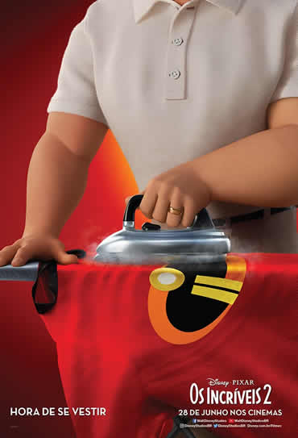

A Proucura da Felicidade
Essa obra, baseada em fatos reais, retrata a vida de Chris Gardner, um cara que perde tudo na busca de ascensão social, mas independente das circunstâncias não desiste até alcançar seu objetivo.
Gosto muito deste filme, pois me faz refletir e pensar em como não podemos desistir dos nossos sonhos e objetivos apesar das dificuldades que encontramos no caminho, pois no final todo esforço valerá a pena.
Clique aqui para acessar mais informações.
As Férias da Minha Vida
Essa obra conta a trajetótia de uma mulher que recebe um diagnóstico errado de câncer em estado terminal, e decide aproveitar seus últimos dias de vida e realizar seus sonhos.
Gosto desse filme, pois me faz refletir sobre como a vida é curta e o quão importante é aproveitar o momento fazendo coisas que amamos com quem amaamos.
Clque aqui para acessar mais informações.
Intocáveis

Esse filme, igualmente baseado e fatos reais, conta a história de um homem tetraplégico e seu cuidador imigrante. Suas aventuras e diferentes pontos de vista são retratados com leveza e dinâmica em meio a uma dura realidade.
Clique aqui para acessar mais informações.
Monte-Carlo
Essa obra cinematográfica, retrata a história de 3 mulheres que se aventuram em uma viagem inesperada para Monte-Carlo,Mônaco.
Gosto bastante dess filme, pois agora tenho o sonho de conhecer o principado e espero ser tão bonito quanto no filme.
Clique aqui para acessar mais informações.
O Casamento do Meu Melhor Amigo
Este filme, relata um triângulo amoroso entre um homem e uma mulher que são melhores amigos, e a noiva do cara quando anunciam que vão se casar.
Particularmente gosto basatante da estética desse filme e o drama envolvido também. Nenhuma reflexão profunda, tirando a parte da traição rs.
Clique aqui para acessar mais informações.
O Hobbit: A Batalha dos Cinco Exercítos
Amo esse filme, não poderia deixar de fora dessa lista! Creio que de todos da saga "Hobbit" esse seja meu favorito.
Clique aqui para acessar mais informações.
Os Incríveis 2
O filme faz uma "inversão" de papéis em relação ao primeiro, pois desta vez quem vai combater os vilões é a mulher elástica, enquanto o Sr. Incrível fica em casa fazendo serviços domésticos.
Gosto bastante desse filme também, adoro a estética. Apesar de toda a coméda envolvida o filme revela de maneira cômica estigmas que contam como um obstáclo na busca de relevânca e destaque da mulher no meio social.
Clique aqui para acessar mais informações.